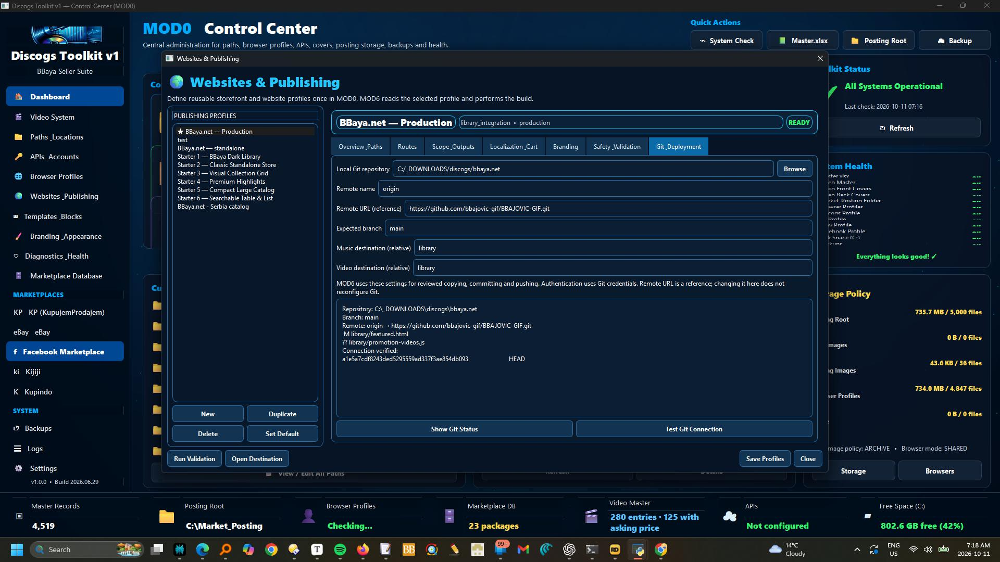
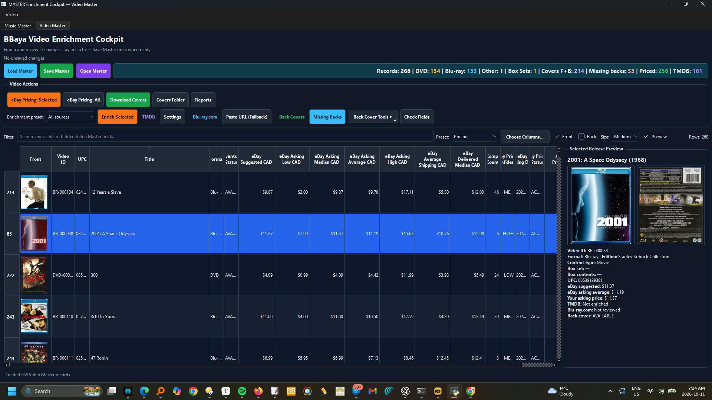
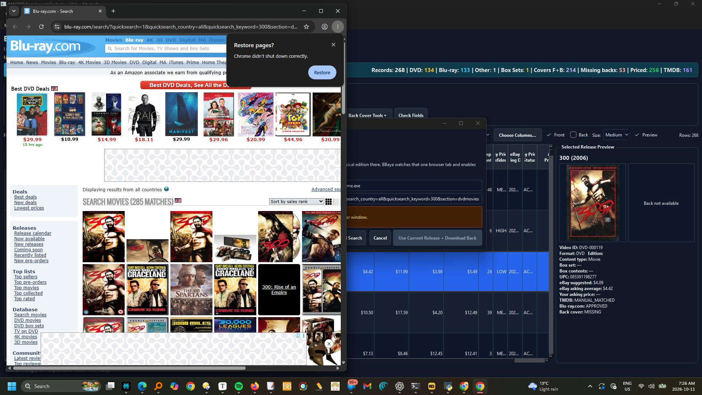
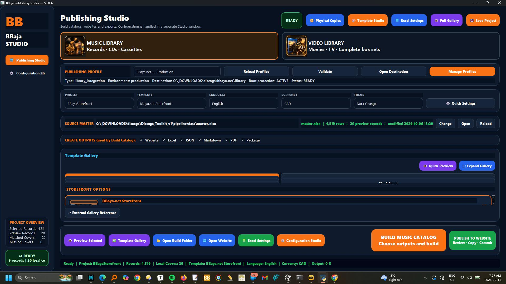
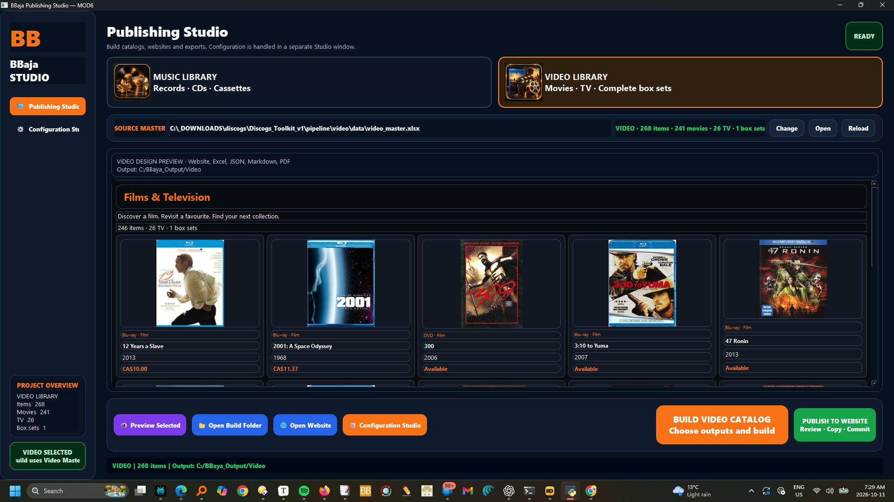
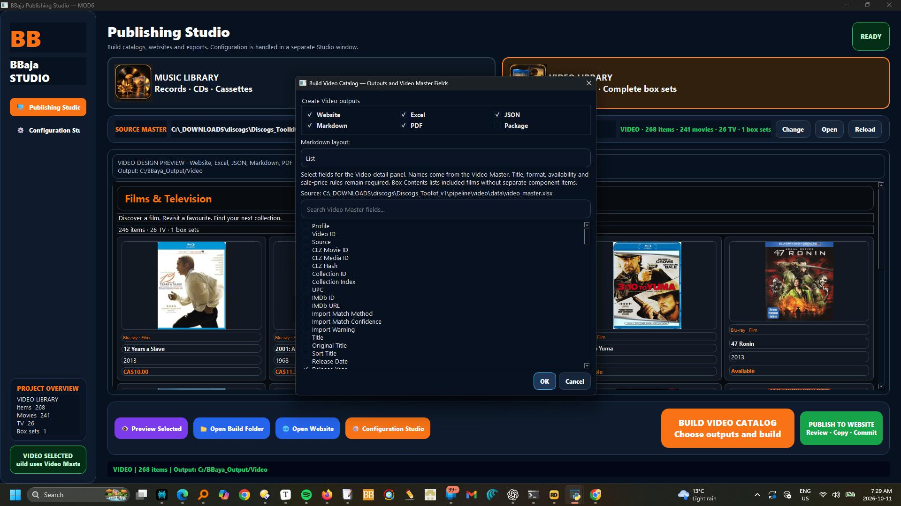

Real application screens
Toolkit
screenshots.
Select any image to view it at a larger size.
ONE PROFILE. A CLEAR DESTINATION.
Set it once.
Publish with confidence.
Keep your website paths, Git branch and publishing destinations together. Check the connection before your next catalog goes live.


How it works · Website profiles and Git deployment
Open Websites & Publishing, select a profile, and use Git & Deployment to set the local repository, remote name, reference URL, expected branch and relative Music/Video destination folders.
Show Git Status checks the working tree; Test Git Connection reads the remote.
Save Profiles before opening MOD6.
The remote URL is a reference, not a command to reconfigure Git.
Authentication uses Git credentials; no passwords are stored in the profile.
YOUR VIDEO COLLECTION. MORE COMPLETE.
Find the details.
Keep the control.
Bring films, concerts and complete box sets into one review workflow. Match metadata, compare eBay asking prices and check the physical release before saving.




How it works · Enrich and review Video Master
Switch to Video Master.
Select one or several records and choose All sources, TMDB only, Release + Back only, or eBay pricing only.
Review metadata matches and physical DVD/Blu-ray editions before accepting.
In eBay Pricing, search the selected records, review comparables and use selected prices.
These are active asking-price references, not completed-sale values.
Set your own Asking Price CAD and Inventory Status separately.
Updates stay in the session cache until Save Master; an exit warning protects unsaved changes.
Filters, columns, selection and table position are retained during refreshes.
Complete box sets are single items; components appear only as contents.
Close the workbook in Excel before saving from MOD3.
TWO COLLECTIONS. ONE PUBLISHING STUDIO.
Build your library.
Make it ready to explore.
Give Music and Video their own storefronts. Choose your outputs, preview the result and publish reviewed files with separate Copy, Commit and Push steps.






How it works · Build Music and Video libraries, then publish
Choose Music Library or Video Library first.
Music uses the music Master and templates; Video uses Video Master and its dedicated storefront design.
Default build folders are C:\BBaya_Output\Music and C:\BBaya_Output\Video; change them in Configuration Studio.
Select Website, Excel, JSON, Markdown, PDF or Package outputs.
Video field selection uses actual Video Master columns.
For website publishing, build Website and JSON, check the preview, then use Publish to Website.
Review differences, approve backing up existing local edits when prompted, and Copy Approved Files.
Check the local website before Commit Reviewed Changes.
Push Commit is a separate action; successful push does not guarantee hosting deployment has finished.
MOD6 reads Git settings from the selected MOD0 website profile.
Copy retains the original build and backs up overwritten files; homepage and shared offer wording are preserved.
Music Videos uses Music in Genres or TMDB Genres, or music Content Type; Storefront Section overrides routing.
Musical alone remains Films & Television.
Box-set components are excluded.